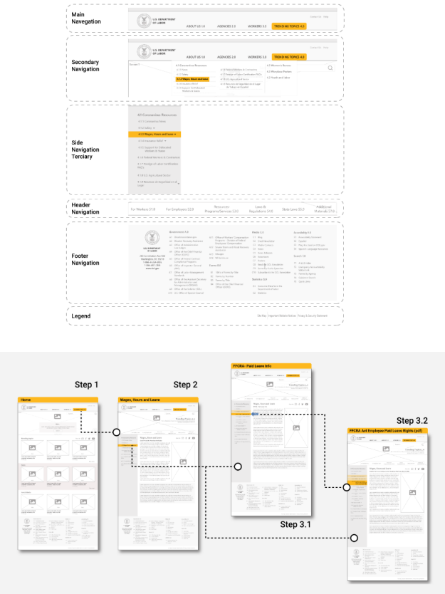

Overview
A large portion of the American population is being affected by the COVID-19 pandemic. It has forced many companies and schools to completely shut down or go online. Millions of Americans are being forced into unemployment and parents are having to juggle work while their children attend school from home.
In this study, we will test the user's path to finding the Families First Coronavirus Response Act (FFCRA) link via the Department of Labor website. The former Department of Labor website offered poor content organization, little to no implemention of a style guide, and many of the pages were very text heavy and difficult to scan.

The Problem
The guidelines and policy documents found on government website for the US Department of Labor are confusing and difficult to sort through.
The Solution
To redesign the information architecture of the navigation to improve the usability on dol.gov website.
Research & UI Analysis
Our Target UsersSince this redesign was for a website of a national scale, our inital step included creating a proto-persona based on our assumptions of who a typical user of this website might be. We decided to move forward with Christine, a middle-aged woman who is remotely working from home while making sure she takes care of her kids. She goes to Dol.gov to see if there is information for paid-time off she can get due to these unforeseen circumstances. We referred back to our persona throughout the project to guide design decisions.

My next step in the research process was to create a user research plan and conduct preliminary usability testing. My goal here was to understand how users get to the resource page for the Families First Coronavirus Response Act from the Department of Labor Website (DOL).
Key Insights
- Users found the homepage a bit confusing, half managed to find the target and half took other routes such as searching first in "search" or "topics", causing them to miss the target.
- 80% managed to find key pieces of information on the page, but had to scan all the documents; this process is very time consuming for users.
- Only 40% of the users were able to do a search for Families First Coronavirus Response Act: Employee Paid Leave Rights Page, there was alot of frustration with the search page layout.
Information Architecture
To understand how users navigated the current Department of Labor website and what areas needed improvement, We conducted 5 user interviews through Zoom to watch users attempt to complete 5 tasks. Each test consisted five tasks using click-test method.

Overall we noticed users felt overwhelmed, confused, and frustrated with the current website layout. So, we used a card sorting technique where we reorganized the information and original navigation on the US Department of Labor site into categories that made sense for the redesign
Based on the card sorting insights, we created a new site map that is simpler, focused more on gaming, and included added feature prioritization matrix like the "compare" and "build your own gaming system" options. We wanted the microsite to feel cost efficent with easy maintenance.

Site Map Iteration

Based on the card sorting insights, we created a new site map that is simpler, focused more on gaming, and included added feature prioritization matrix like the "compare" and "build your own gaming system" options. WE wanted the microsite to feel cost efficent with easy maintenance.
Wireframes
My next step involved looking through our site map, user flow, feature prioritization matrix to create sketches. Since I was working with many creative designers, it was relatively easy to move straight into digitial lo-fi prototypes.
Based on our features and information architecture, we came up with a simple layout with the goal of easy navigation, highlighting gaming products, not over-crowding the product page with specs, and including a quick checkout process. We worked toward these goals by adding multiple tabs in the navbar, buttons to reduce the amount of text and better visuals.

Detailed Specs
Before making those iterations and creating a hi-fi prototype, we created a UI style guide. Our goal was to stay aligned with Dell's branding to ensure brand recognition within the microsite. This inolved researching the main style guide for Dell as a company as a launching point for microsite styling.
Our goal was to make the gaming microsite feel like other gaming-specific product websites so we researched competitors like EA, Playstation, Xbox, and Aleinware. We found out that their color palettes included bright colors and contrasted with black and grey.
Taking what we learned from Dell's competitors, plus Dell's branding, we decided to make a color palette that included bright shades of blue, purple, and black. Lastly, we created new versions of the Dell logo, specifically for the gaming microsite.

The Execution
The gallery belows shows our Hi-Fi desktop and mobile prototype.The newly redesigned prototype, we used the grid system to help organize our UI components, and in order to make it more scalable for web/mobile. In our hi-fidelity prototype, we resolved the user's pain points from the Lo-fidelity testing, aiming to make experience more intuitive.
- We added recommended items in the "view product" pages.
- We added multiple paths back to the Home Page.
- We differentiated "products" and "shop" tabs by renaming them to "product brands" and "hardware".
Validation
Testing Our AssumptionsOnce the team had a hi-fidelity prototype ready for use, we knew we needed to put it in the hands of our users. In this iteration, we tested the same 4 flows as the previous one and found out that the only task with 100% success rate was creating an account.
“Prototyping was the most effective way to gain meaningful feedback from the team, and from our stakeholders...”